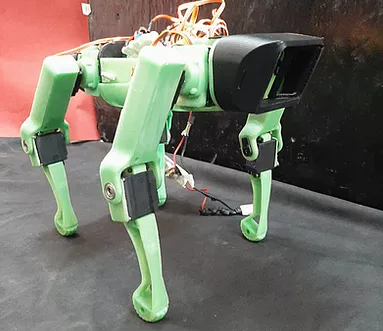
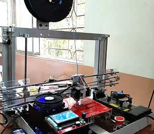
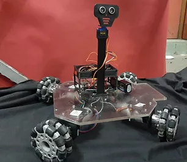

DRAIC PROJECTS
Our team focuses on Project-based learning. Besides participating in various National and International Competitions, we also work on several projects throughout the year. Here are details of some of our projects.

Autonomous Quadrupled Robot
Development of 3D Printed Autonomous four-legged robot with Servo Motors for actuation.

Customized 3D Printer
Developed a customized 3D Printer, with PLA as a filament by utilizing some open source resources.

Autonomous Path Finder Robot
Made an Autonomous Obstacle avoider and Path finder robot with Omni Wheel drive and Ultrasonic Sensor.